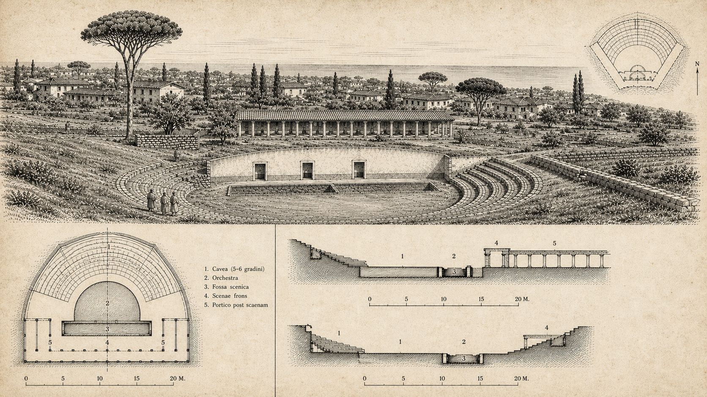

Il Teatro Romano di Antium
Un edificio di lusso per pochi spettatori di rango: la cavea rivolta verso il mare, il portico con 18 colonne, i rivestimenti di marmo. Il teatro più elegante del litorale laziale.
Scoperta e prima documentazione
Il piccolo teatro di Antium fu scoperto e scavato alla fine degli anni Venti del Novecento, nel cuore del quartiere di Santa Teresa. La scoperta si inserisce in un decennio di intense ricerche sul pianoro della città alta, quando vennero alla luce anche la Villa Spigarelli e i resti dell'edificio semicircolare con xystus. Giuseppe Lugli ne fornì la prima descrizione scientifica nel 1940 (pp. 175–176), rimasta il testo di riferimento per tutti gli studi successivi.

Architettura e misure
Lugli lo descrive come «un grazioso teatro [...] con un lungo colonnato dietro la scena», di 30 m di diametro. La cavea era divisa in 11 cunei tagliati a metà da un corridoio semicircolare coperto (il diazoma). L'opera mista di reticolato e mattoni colloca la costruzione nella seconda metà del I secolo d.C.
Il porticus post scaenam — il grande colonnato dietro la scena — aveva in origine 18 colonne, ridotte a 14 nel corso delle vicende costruttive. L'ossatura muraria era interamente rivestita di marmo: un dettaglio che, secondo Lugli, dimostra «un particolare lusso e un uso limitato a pochi spettatori, ma di rango scelto». Non era un teatro popolare: era un luogo per l'élite anziate e imperiale.
Orientamento e paesaggio
La cavea è rivolta verso ovest, verso il mare aperto. La scelta seguiva le indicazioni vitruviane sull'orientamento ottimale (illuminazione mattutina, ombra pomeridiana per il pubblico) e offriva agli spettatori il panorama della costa come sfondo naturale della scena — espediente che Lugli collega alle diaetae delle ville romane, dove il paesaggio era parte integrante dell'architettura.
Questa integrazione tra architettura teatrale e veduta marittima è un unicum nel panorama dei teatri del Lazio: nessun altro edificio per spettacoli della regione unisce la piccola scala aristocratica alla posizione panoramica sul Tirreno.
Datazione: Lugli e la scheda museale
Lugli (1940) propone seconda metà I sec. d.C. sulla base della tecnica costruttiva in opera mista. La scheda del Museo Civico Archeologico di Anzio assegna il teatro genericamente al II sec. d.C. Le due datazioni non si escludono a vicenda: l'edificio potrebbe essere stato avviato sul finire del I secolo e completato o modificato nei decenni successivi. In assenza di una pubblicazione monografica moderna, la divergenza non è ancora risolvibile con certezza.
Confronto con i teatri del Lazio
Con i suoi 30 m di diametro, il teatro di Antium è di piccolo formato rispetto ai grandi teatri della regione (Ostia: 63 m, Terracina: ~40 m). Ma la qualità dei materiali — marmo ovunque, colonnato monumentale — e la posizione privilegiata lo collocano in una categoria a sé: non un teatro civico di massa, ma un edificio da villa imperiale, simile per concezione ai teatri privati delle villae tiberiane e neroniane.
Collocazione e visita
Collocazione: Piazzale del Teatro Romano, quartiere Santa Teresa, Anzio. Le strutture visibili sono incorporate nell'attuale tessuto urbano del quartiere. Visitabile tramite il Museo Civico Archeologico di Anzio, che conserva materiali riferibili all'edificio.
| Caratteristica | Dato |
|---|---|
| Diametro cavea | 30 m |
| Numero cunei | 11 |
| Colonne porticus | 18 (poi 14) |
| Tecnica costruttiva | Opera mista (reticolato e mattoni) |
| Datazione (Lugli) | Seconda metà I sec. d.C. |
| Datazione (Museo Civico) | II sec. d.C. |
| Orientamento cavea | Verso ovest (mare) |
| Visitabile | Sì (Museo Civico Archeologico di Anzio) |